Dissection of a Blu-ray Reader Assembly
Leslie Wright and Samuel Goldwasser
(Original version: March 8th, 2007)
(Last Update: October 1st, 2011)
Introduction
There is always new data being added to the pages, as more people are e-mailing me with specs for their particular diode. So if you have a PS3 laser on order, visit again before extracting or testing the diode, in case there have been any developments!
Thanks go to those people, who have mailed.
The original page had become quite large. I never expected to be writing an essay on a Disc reader, so it has now been split into three parts, and are indexed as follows:
- Main
Page (you are here! has now been stripped of technical
details, which are on the following two pages.
Some of the original text is still here, since other sites have linked
to images etc).
- Diode Page
(All of the information currently available on the special PS3 diode
can, if you want to build one of these, then this is where you need to
be!)
- Optics Page (Since the optics also turned out to be very special, and useful, they have now got a page to themselves.)
I recently purchased, for the princely sum of £40 UKP / $80 USD, a SONY PlayStation 3, replacement laser reader assembly, with the sole intent of taking it apart, for the Blu-ray laser diode.
Here is the drive unit itself, part number KES-400AAA, as I received it. The optical carriage is almost twice the size of conventional carriages.
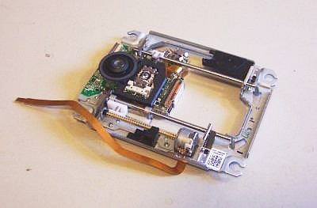
And here are more detailed top and bottom views:
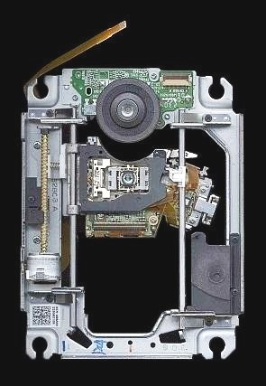
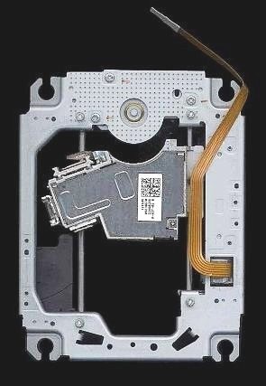
(Click on photo for closeup.)
This is a view from the underside, with the Laser diode arrowed. The laser is attached to a small heatsink, which is screwed to the carriage. Although it is hard to see in the picture, the Laser diode can has FIVE pins.
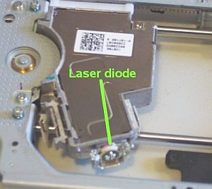
The pin-out was determined by eye, at first. I extracted the laser diode, and looked through the end window, with the aid of a microscope, to determine, where the internal wires went. Then tested my conclusions with the multimeter. The case is negative with respect to ALL THREE laser diodes. (Yes, there are THREE individual laser diodes in the same can - hence the weird pin out!)
Carefully read all the related material in Sam's Laser FAQ, especially in the chapters starting with: "Diode Lasers". The information there is invaluable, and extremely important!

- GND: Negative return for LDs and PD cathodes (-ve).
- VLD: Violet (~405 nm) diode anode (+ve).
- RLD: Red (~650 nm) diode anode (+ve).
- IRLD: IR (~780 nm) laser diode anode (+ve).
- PD: Photodiode anode.

This is a close-up of the connections on my unit. (Note the remaining section of polymer-PCB).
- Black: LD and PD cathodes (GND, -ve).
- Blue: VLD anode (+ve).
- Red: RLD anode (+ve).
I ran a series of tests on my diode this afternoon, and have determined the following parameters. (these are a guide only, and are the specs for my particular diode, your Ith may vary, and as a consequence, your operating current will vary!)
- Threshold current = ~28 mA.
- Working voltage = ~4.5 V.
- Operating current = 30 to 40 mA; *** see WARNING at the bottom of the page!

The above graph is a plot of diode current, against optical output, and was measured using a Coherent Lasercheck As can be seen on the graph, threshold (Ith) occurs at 28 mA to 30 mA.
Note: On this graph, the final real measurement was made at 45.7 mA (13.9 mW). The line from 45.7 mA to 50 mA is extrapolated.
I have tested and run mine at settings of 4.4 V and 40 mA MAX! The output is VERY bright. It works, and it stays cool!
The PSU at the moment is a simple 6 V battery with a current limiting resistor in series (47 ohm). There is a better driver, at the bottom of the page! If you intend to build one of these visit the Diode Page first! There is new, updated and more accurate information there!
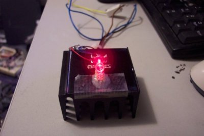
Laser diode emitting red, with small collimating lens.
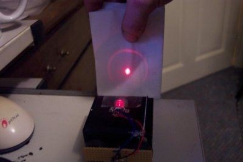
This is the Laser diode mounted on a heatsink with the red emitter powered.
And now, this is what you have all been waiting for.....

Wonderful shade of Violet!
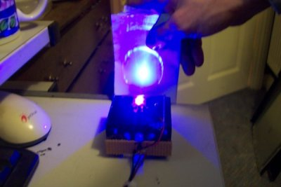
Output
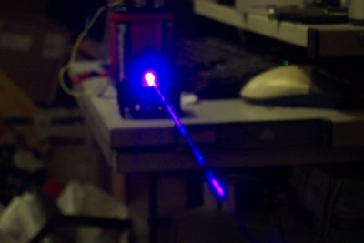
Smoke in the beam!
In the above picture the Laser and its little mount, were just glued to the large heatsink, no heat transfer compound was used,(the heatsink was used, because it was convenient) I figured there was enough metal in the mount to dissipate any heat. The laser stayed cool throughout its operation.
The diode can is standard 5.6 mm dia, and could be easily integrated into the collimating assembly of a dead red module.
The optical output is confirmed by Rob as being 10 to 20 mW, there will be more info about this, as soon as he completes his measurements.
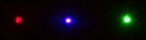
Here is the beam compared with 5 mW red (~650 nm) and 8 mW green (532 nm), photographed on NON-fluorescing white surface. When I built the above red/violet laser module, I set the collimating lens for violet. (red will be uncollimated) maybe I could solve this using a triplet lens, and mix the two wavelengths!
** Note: It has been suggested that this may cause heat dissipation issues, by running two diodes at the same time!
A picture of the expanded beam is shown below:
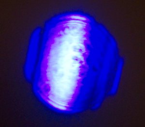
You will notice that the portion of the spot on the right hand side, has diminished in apparent bightness by as much as 50%. (The little black spots, are due to dirty optics and should be ignored.) Since no heating of the laser diode was apparent, during the tests, I conclude that COD (Catastrophic Optical Damage) is the most likely cause.
This shifts the reasonable range of operation for this diode down to 30 to 40 mA, for a decent diode lifetime. Or if your diode has a lower or higher threshold, adjust according to the simple equation:
-
IopM=Ith+10
Where Ith is the threshold current for your particular diode, and IopM is the maximum suggested drive current.
As the saying goes "you have to break a few eggs, to make an omelette". I have broken mine so you don't have to break yours! Fortunately, I already have another unit in the post. Since this one still lases, (although at diminished brightness) I have made a Blu-ray laser pointer out of it!
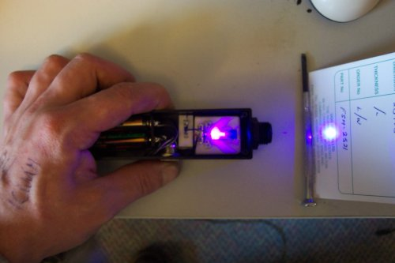
This pointer runs off of 4 AAA cells, and is current limited by a 47 ohm resistor. For a better driver, the one below is based on the LM317 regulator.

This is a diagram of a simple adjustable current regulator, designed for 9 V battery operation of the Violet Laser diode. The 0.1 uF capacitor, is soldered across the actual laser diode, all the rest is mounted on the board.
Below are pictures of a module I have designed. They will occasionally be on sale on eBay, as will violet laser pointers, and other laser related Items. Please check HERE to see what is available.
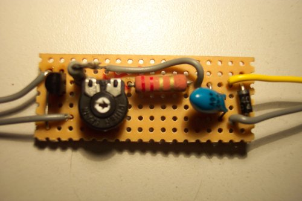
Note that in this module, I have included a reverse polarity protection diode on the right, the 10 µF capacitor is also located here to save space on the board!
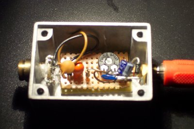
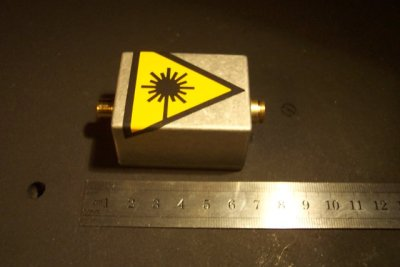
Here is the fully assembled module. It is roughly 8 cm long and is enclosed in a die-cast housing. It requires 9 VDC to operate, and the connection is made via a gold-plated phono socket at the rear. The module is reverse polarity protected, and should be fairly resiliant to ESD and damaging spikes. However, I recommend the use of a conditioned power supply,(no not the cheap 99p adaptor you just picked up!!) or battery operation (no spikes in a battery!!! ).
CHECK that whatever you connect it to is actually 9 V off load! I have lost count of the number of times I have checked 9 V adaptors, to find they put out more than 15 V under light load!
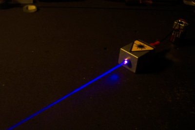
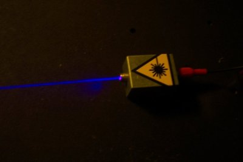
The Rest of the Assembly
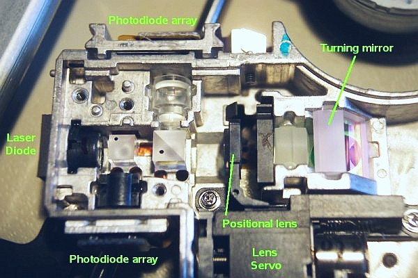
This is the assembly with the bottom covers removed. There is a thorough explanation of the optics and their uses on the Optics Page.
Violet Laser Diode Myths Exploded!
While the violet laser diodes, are obviously of a much higher power than one would expect to find in a reader, you must consider the losses apparent in Sony's optical system, and remember that scattering is much more of a problem at short wavelengths.
Some people have commented that "it must be a burner because you can see the beam in the dark" and "wow that spot is bright for its wavelength so it must be a burner!"
These are the reasons for both of those comments:
- You can see the beam in the dark because, at this short wavelength, the
light will scatter forward, even off the gas molecules in the air! (the
reason the sky is blue - Rayleigh scattering).
- As for the spot appearing exceptionally bright for it wavelength, well
at say 695 nm (deep red), the eye is fairly insensitive, and you would
expect at the other end of the spectrum, that 405 nm would appear just
as dim! However, at these short wavelengths, most things (read: almost
everything in the universe!) are quite fluorescent! If you actually
find a surface that isn't as fluorescent, such as (very clean) Teflon,
you will find that the spot is indeed quite dim!
- If it truly was a "burner", I would expect the voltage drop to be
considerably larger, and Ith to be considerably higher too.
- The output of the violet laser diode may vary by as much as 10 mW only because Nichia's processes are far from perfect yet, and whilst the diode is capable of being pushed to at least 20 mW, I advise that you only run at Iop of Ith+10mA max, for reasonable life! The lifetimes are quoted as 5,000-10,000 hours when run at its lowest operating current, so pushing it higher, will result in shortened life!
For More Information
Return to Laser Pages